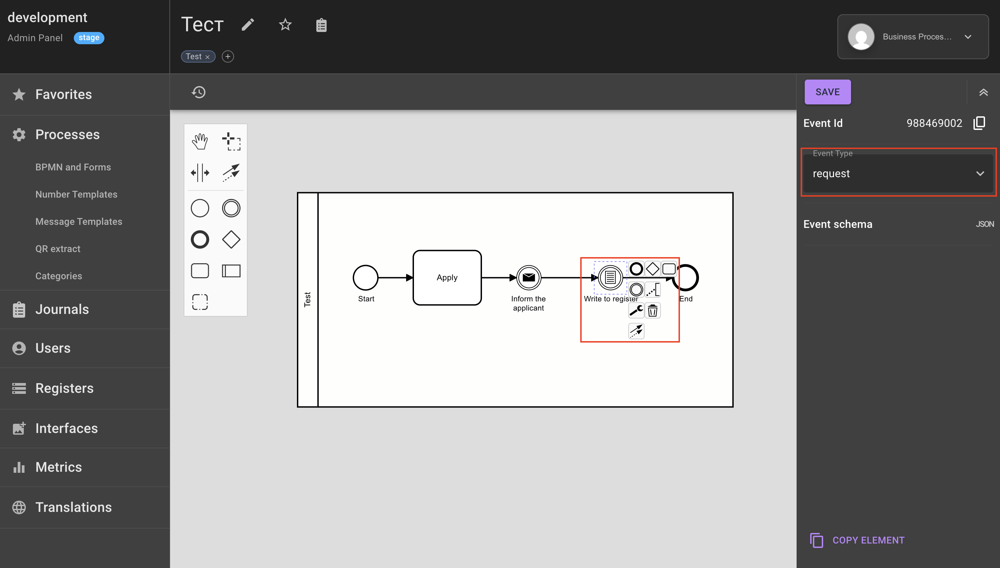
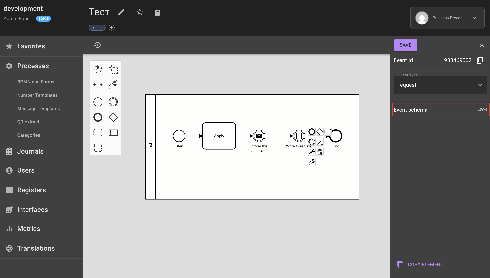
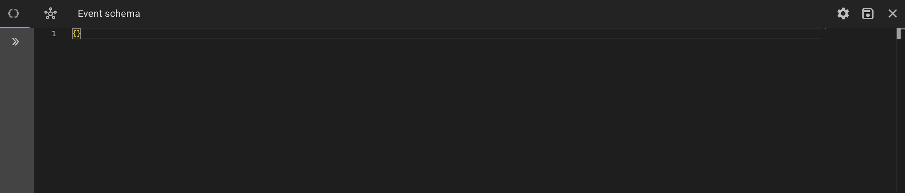
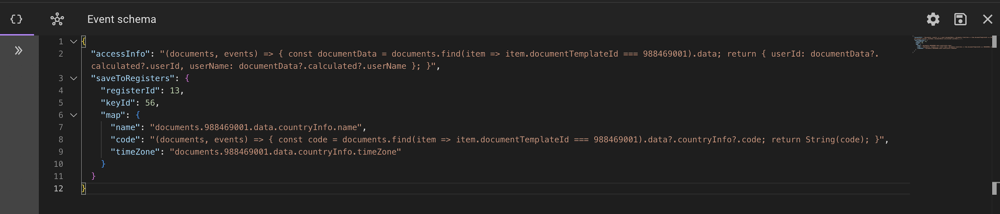
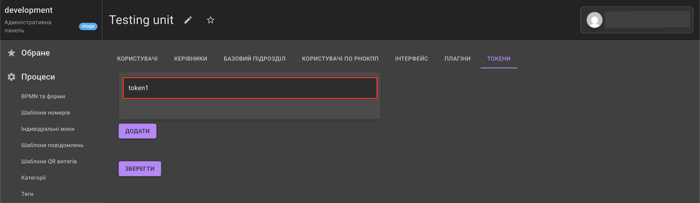
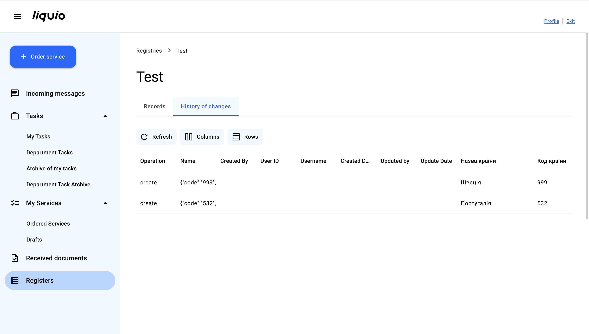

How to save data to a registry?
Prerequisites
To save process data to a registry, you need to add an Event element with the Request type to the diagram.
For a description of process elements and working with the editor, see the page How to configure a process?
Saving to a registry
To configure saving to a registry, perform the following actions:
1) In the process diagram, select the Event element with the Request type. 
2) In the settings panel that opens on the right, go to the Event diagram tab. 
3) A window opens for entering code in JSON format. 
4) Add code with special syntax. List of supported parameters.
5) Save the written code by clicking the Save icon. 
Supported parameters
1) saveToRegisters — required parameter that accepts a function string or an object with mapping data:
-
variant: function string — describes a JavaScript string function that takes one argument — documents (array of process documents). The result of processing will be a data object for saving to the registry, or an object with mapping data to the registry key schema. The function result contains the following parameters:
- registerId — required parameter to determine which registry the data will be saved to by its identifier. Type —
number; - keyId — required parameter to determine which registry key the data will be saved to by its identifier. Type —
number; - allowTokens — optional parameter that accepts a list of unit tokens to grant access to this record in the registry. Type —
array; 
Please note!
If a unit has permission to access the registry, but it is not in this list, the records may be inaccessible.
If this parameter is not set, the records will be accessible to all units that have access in the registry key settings.
- data — required parameter, which is an object with a list of field data to save them to the registry. Type -
object.
Example of using saveToRegisters as a function string

- registerId — required parameter to determine which registry the data will be saved to by its identifier. Type —
-
variant: object with mapping data — the function result contains the following parameters:
- parameters registerId, keyId, allowTokens — similar to the variant when the parameter accepts a function string;
Info
The allowTokens parameter can also accept a function string that takes two arguments: documents (array of documents of the current process) and events (array of events of the current process), the result of which should be an array of unit tokens;
-
person — optional parameter that has type
objector is a function string that takes two arguments documents (array of documents of the current process) and events (array of events of the current process) with user data responsible for creating the record. Record format:{id, name}, where: id — identifier of the user who made the record, name — full name of the user who made the record. The result of execution should be an object with filled parameters{id, name}respectively. The parameter is necessary in cases when it is needed to record who exactly made the record to the registry. It is recorded in the change history, since by default it is system. -
map — required parameter, which is a mapping object, the parameters of which have the same names as the list in the registry key schema. Type —
object. Values have the following recording variants:-
string with path to the required document value by process —
documents.<document-template-id>.<inner-document-path>, where:-
documents — parameter with the value of the array of process documents;
-
document-template-id — identifier of the process number
documentTemplateIdfrom which data needs to be obtained. The value can be found in Process logs; -
inner-document-path — path to parameters that are stored in the data. The path can be determined by the execution results in Process logs.
-
-
function string that takes two arguments: documents (array of documents by process) and events (array of events by process), and returns the required parameter value.
-
Example of using saveToRegisters as an object with mapping data
2) accessInfo — optional parameter, which is a function that takes two arguments documents (array of documents of the current process) and events (array of events of the current process).
Must be set if for the corresponding registry it is necessary to record data (full name, user identifier) in the change history (creation, deletion, editing of records) in the User Workspace.

The Liquio Event service additionally records
workflowId(identifier of the current process) andrequestAt(date and time of the action relative to the registry) when executing the function.Example code using the accessInfo parameter